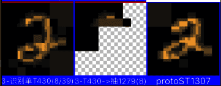
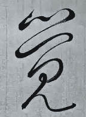
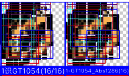

AI系列之《2026.04-05：加权求和切图法与视觉注意力》

来源：HELIX_THEORY/手稿/assets/803_自举匹配数太低问题.png

来源：HELIX_THEORY/手稿/assets/804_草书为例分析视觉识别.png

来源：HELIX_THEORY/手稿/assets/805_GT识别匹配率初步回测OK.png
来源：Note37.md、Note38.md
4 到 5 月，视觉系统进入密集迭代：加权求和切图法、自举匹配数、连续视觉专注循环、从绝对准度转向竞争浮现、高清图性能、摄像头彩图、视觉注意力递归、任务注意力、动体注意力和无意注意力。
高清图性能总结很关键：旧做法会随像素规模爆炸，新做法改成先粗略识别约 1000 像素，再由注意力选择局部 CropRect 进入下一轮识别。这样把爆炸式计算变成可递归的注意力循环。
“绝对准度”被放弃，转向“竞争浮现为准”，是这一阶段最重要的思想变化。系统不再执着每次局部判断都绝对正确，而是让多个候选在连续识别、注意力递归和任务目标中竞争，最终浮现稳定结果。